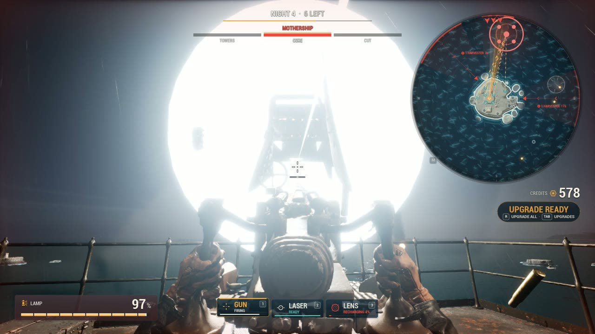
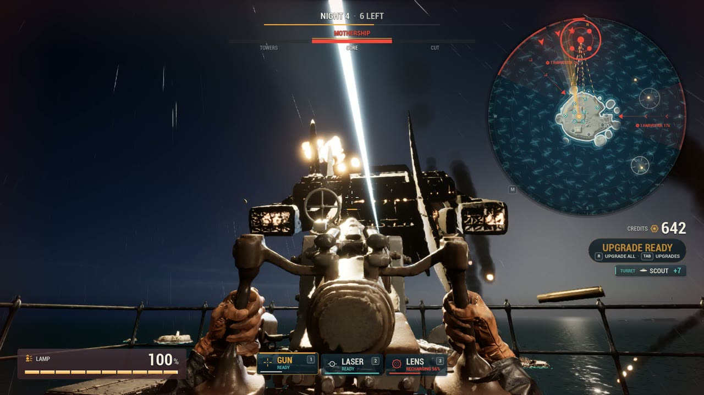
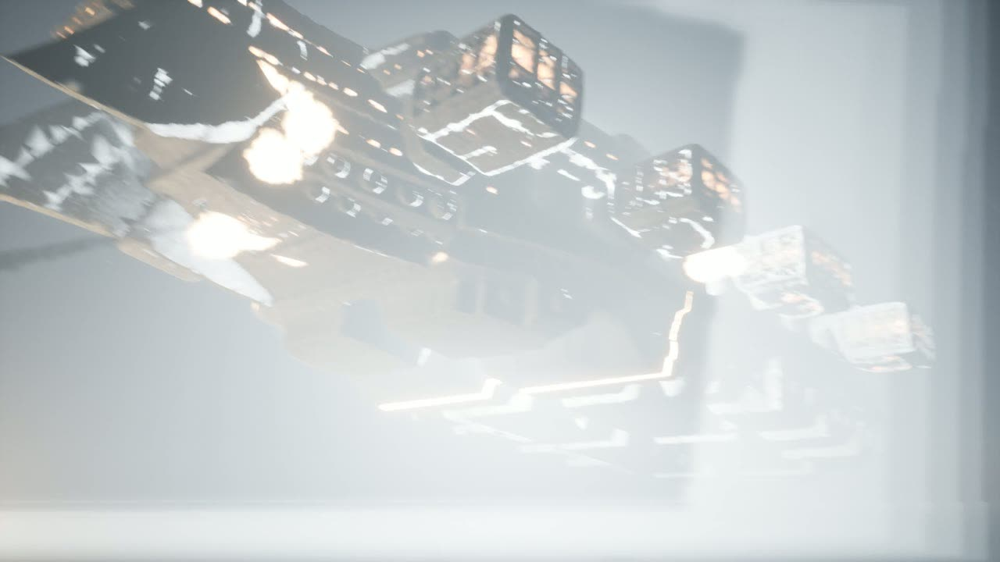
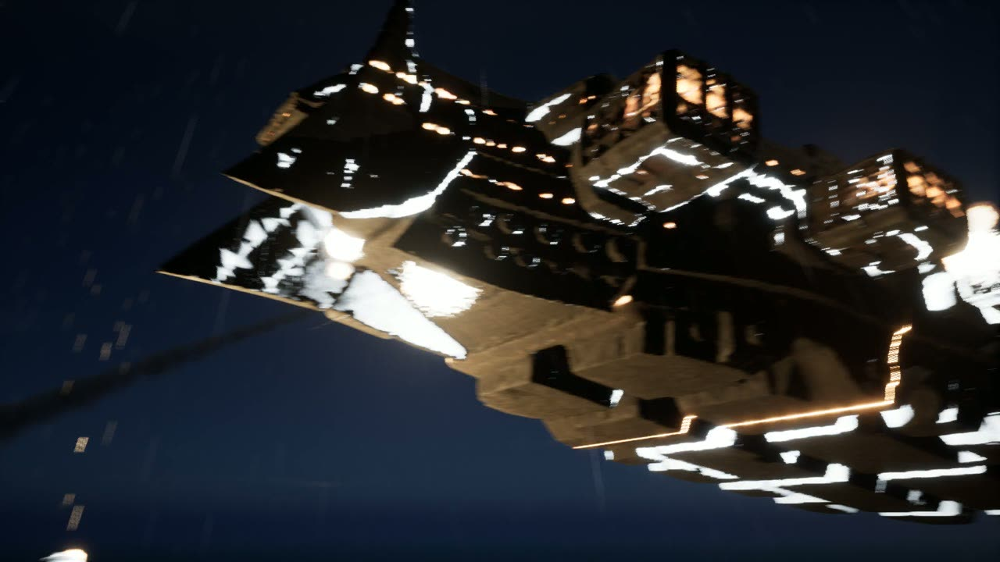
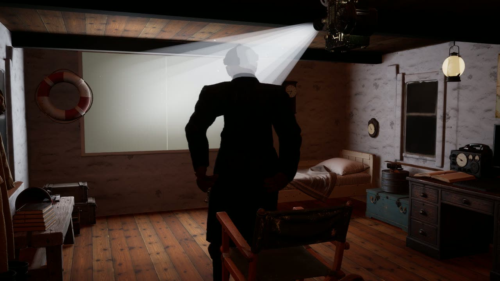
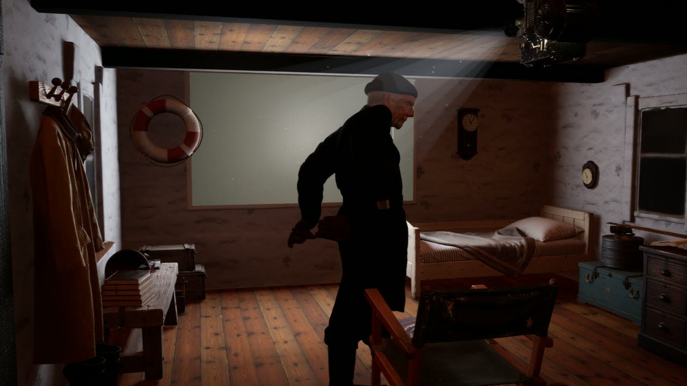

Day 3 Saturday 14 November
The final package, with the evening's fixes
6 pictures 1 failure 3 min read
Checkpoint The final package passes the entry checks, 22:52
This short entry covers Saturday from 22:45 to 22:55. It was written at 22:55, and its pictures were added at 23:10.
The video on the front page, live
After publishing, the front page was checked on the live site itself, not only on a local copy. The play button sits on the key art. A click opens the dialog, and the final video plays with its sound from this site's own copy (the 720p copy was picked for the test window). Escape closes it, and the focus returns to the play button.
The package handed in
The package made at 20:28 was built before the four visual fixes of this evening:
- the mothership's shield bursting as a white disc over the gun;
- a lamp hit turning the gun pale;
- the pale sheet over the drone's picture at the rocket's hit;
- the keeper's head going white under the projector.
So the game was packaged again at 22:48 from the current code, which holds all four. To show them in pictures, the fourth night was recorded once more at 23:00 with the current code. Each "before" is from the recording the gameplay video was cut from, at the same moment of the same night.


Before Before: the shield's burst as a white disc over the gun


After After: the same moment, the burst left out at this distance


Before Before: the blast's light filled the fog round the camera


After After: the blast lights the ship, not the fog


Before Before: the beam drawn over his head


After After: the beam dims while his head blocks it
- Size: 981.3 MB, packaged in 134 seconds, just under the 1 GB the jam's upload page takes in the browser.
- Run from the zip: unpacked into a clean folder, it started off screen, kept running and opened no network port. NVIDIA's DLSS modules loaded.
- Inside it: a Licenses folder with the notices the third-party parts ask for, as in the last package.
- The entry's checks, on this zip and the final gameplay video together, all passed: the zip's name (team name and game name), one game folder with the program in it, no project or source files, the C++ runtime installer inside, the video at 58.8 seconds (30 to 60 are allowed), 1920x1080 with sound, and Epic's deadline still ahead.
The checks that only a person can make come next: the developer plays this package, watches the video once more, and fills in the entry form himself.
Housekeeping
The drive was down to 4.9 GB free, too little for a package. The temporary files of this evening's checks were deleted first: the seven test recordings of the fourth night, the preview mixes, the test builds of this site and the video versions that were not chosen, about 1.8 GB. The final videos, the takes they are cut from and everything needed to build them again were kept.